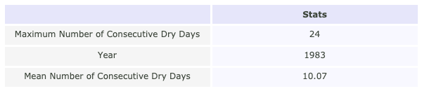

Consecutive dry days#
Highlights:
There has been little change in the mean and maximum number of consecutive dry days over the period 1951 to 2024.
Show code cell source
import os
import os.path as op
import sys
import folium
import numpy as np
import pandas as pd
sys.path.append("../../../../indicators_setup")
from ind_setup.plotting_int import plot_timeseries_interactive
from ind_setup.plotting import plot_bar_probs
from ind_setup.tables import plot_df_table, table_rain_dry_summary
sys.path.append("../../../functions")
from data_downloaders import GHCN
from rain_func import consecutive_dry_days, count_consecutive_days
country = 'Palau'
vars_interest = ['PRCP']
Get Data#
update_data = False
path_data = "../../../data"
Show code cell source
if update_data:
df_country = GHCN.get_country_code(country)
print(f'The GHCN code for {country} is {df_country["Code"].values[0]}')
df_stations = GHCN.download_stations_info()
df_country_stations = df_stations[df_stations['ID'].str.startswith(df_country.Code.values[0])]
print(f'There are {df_country_stations.shape[0]} stations in {country}')
Using Koror Station#
Show code cell source
if update_data:
GHCND_dir = 'https://www.ncei.noaa.gov/data/global-historical-climatology-network-daily/access/'
id = 'PSW00040309' # Koror Station
dict_prcp = GHCN.extract_dict_data_var(GHCND_dir, 'PRCP', df_country_stations.loc[df_country_stations['ID'] == id])[0]
data = dict_prcp[0]['data']#.dropna()
data.to_pickle(op.join(path_data, 'GHCN_precipitation.pkl'))
else:
data = pd.read_pickle(op.join(path_data, 'GHCN_precipitation.pkl'))
threshold = 1 #Threshold for dry and wet day
data = data.groupby(data.index.year).filter(lambda x: len(x) >= 300).dropna()
data['dry_day'] = np.where(data['PRCP'] < threshold, 1, 0)
consecutive_dry_year = data.groupby(data.index.year)['dry_day'].apply(consecutive_dry_days)
data['below_threshold'] = data['PRCP'] < threshold
data['consecutive_days'] = count_consecutive_days(data['below_threshold'])
plot_bar_probs(np.unique(data.index.year), data.groupby(data.index.year)['consecutive_days'].mean(),
trendline =True, y_label = 'Mean consecutive dry days [< 1mm]',
figsize = [12, 5])
(<Figure size 1200x500 with 1 Axes>,
<Axes: ylabel='Mean consecutive dry days [< 1mm]'>)
plot_bar_probs(np.unique(data.index.year), data.groupby(data.index.year)['consecutive_days'].max(),
trendline =True, y_label = 'Maximum consecutive dry days [< 1mm]',
figsize = [12, 5])
(<Figure size 1200x500 with 1 Axes>,
<Axes: ylabel='Maximum consecutive dry days [< 1mm]'>)
df = table_rain_dry_summary(data)
fig = plot_df_table(df.T, figsize = (600, 150),)
